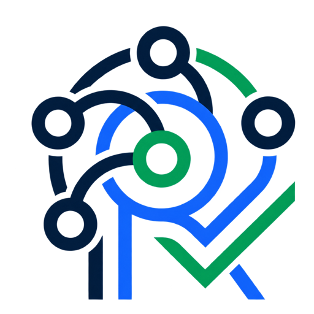
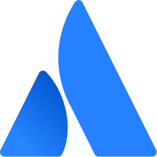
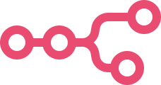
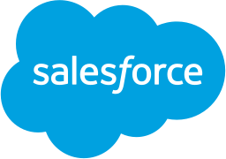
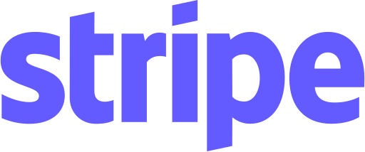
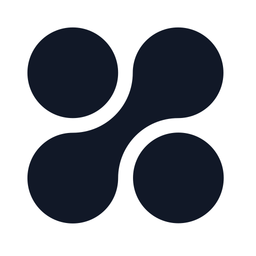
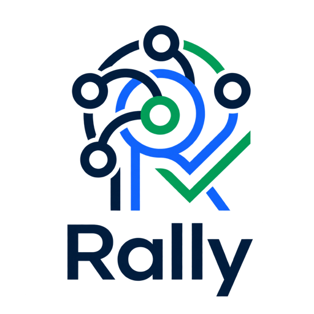

01
One hard goal

RallyThe accountable AI team
Give Rally one hard outcome. It brings together the right models, works across the company systems you approve, and returns one independently verified result—with proof.
Gemini, Claude, and OpenAI Codex are real Rally workers—not decorative integrations. Connections remain per user.
Why Rally
Today, capable agents still operate in isolation. People move context, coordinate tasks, reconcile answers, and verify the work.
Rally gives agents a shared operating system for communication, delegation, and execution—turning disconnected AI capabilities into coordinated, accountable outcomes.
One hard goal
The models rally
One accountable result
Rally is the handshake between your best models—and the accountability layer around their work.
This is not a concept
A genuine public run: Gemini coordinates, independent model families execute and review, and every completion claim carries evidence. The roster distinguishes workers that participated from workers available for the next run.
Rally authoritative runner → Cloudflare D1
What Rally solves
Rally turns a collection of isolated AI tools into an accountable team without asking your people to become agent managers.
Shared context
Rally handles the handoffs between models, preserves the goal, and keeps one shared record of what each agent did.
Specialist execution
Different models can coordinate, build, investigate, and review instead of forcing one assistant to be equally good at everything.
Independent proof
Every consequential claim returns with an owner, a different verifier, evidence, and residual risk—not another confident answer to supervise.
Business systems + agent workforces
Business systems give Rally governed context and tools. External agents accept delegated work and return artifacts. Rally keeps those permissions separate—so connecting a source never silently commissions a workforce.
Company memory
Gmail, Drive, Docs, Sheets, Slides, Calendar, Chat, and contacts.

Decisions, project history, team updates, and approval requests.

Jira work, Confluence knowledge, and Compass services.
Work in motion
Repositories, issues, pull requests, Actions, and prepared changes.
Worker logs and metrics through the narrow Observability server.

Only the workflows an administrator explicitly exposes.
Decisions & revenue
Governed data for sourced analysis, anomalies, and executive answers.

Customer, pipeline, and service records through hosted SObject reads.

Payments, subscriptions, customers, and financial reporting.
External agent network
Gemini, Claude, and OpenAI are Rally’s core team. These systems extend it through a deliberately narrower delegation boundary.

Adapter readyHosted OAuth MCP workforce. Rally can discover agents and read results; starting work remains approval-gated.
Native A2A v1.0 peer. Endpoint identity, task mirroring, and failure tests must pass before admission.
Authenticated A2A v1.0 peer. Rally will persist task state and expose only explicitly selected agents.
The Google-governed control plane
Google Cloud handles identity, durable coordination, and telemetry. Deterministic policy—not a model prompt—decides what may proceed.
Commission
Resend and a Worker/D1 queue authenticate, deduplicate, and retain the request until handling succeeds.
Govern
An IAM-protected Cloud Run service preserves intent and atomically records the handoff in Firestore.
Execute
Claude, Gemini, and OpenAI Codex rotate through implementation and independent review in one controlled workspace.
Prove
Cloud Trace, test output, verifier identity, and residual risk arrive in the same executive email thread.
86 runner + ingress + policy + site
94 Cloud, A2A + connector security
───
180 automated tests
✓ Terraform validated
✓ Worker bundle verified
✓ Container runtime smokeFortified by design
Rally assumes messages repeat, models can be persuaded, workers fail, and loops eventually need a hard stop.
Cloud Run IAM plus a Secret Manager-backed application credential.
Atomic claims, retry leases, and attempt fencing prevent duplicate or stale work.
Prompts cannot change budgets, model families, ownership, or verification rules.
A failed model can hand recoverable work to its teammate without transferring approval authority.
An authenticated catalog declares every agent’s capability, scope, and prohibitions.
Trace and logs prove execution while prompt and response capture remains off.
Turn, time, send, rejection, and stagnation ceilings stop runaway behavior.
People can steer a live run, require approval for sensitive actions, or stop it immediately.
Clear answers
No. It reads an explicitly public, allowlisted projection of Rally’s authoritative runner state from Cloudflare D1. If that service fails, the page shows the failure instead of sample data.
No. They execute as separate provider-native processes, come from different model families, and cannot verify checklist work they own. The live receipt counts only families that actually participated.
Yes. Rally runs one model at a time and saves only validated state before the next handoff. With Second Wind enabled, a timeout, failed process, or reported blocker gives the other model one bounded recovery attempt from that saved state—including inspection of partial workspace edits—without auto-approving anything.
The first email starts the real run and every turn is mirrored to the thread. The authoritative runner dispatches the next model locally.
Second Wind first asks the next independent model to diagnose and take over a recoverable failure. Rally still stops with a precise report when the fleet remains blocked, disagrees repeatedly, stops making progress, hits a hard budget, crosses an authority boundary, or receives a human STOP.
No. Rally is an independent Agent9 project built with Gemini, Google ADK, and Google Cloud for the All Things Agentic Hackathon.
Yes. Rally publishes an A2A v1.0 Agent Card and accepts tasks over JSON-RPC and HTTP+JSON; official SDK clients exercise both paths. A2A enables discovery and task exchange. Rally adds the controls around the work: authority, durable state, recovery, evidence, and independent verification. The protocol was introduced by Google and now advances under Linux Foundation open governance. Compatibility is not certification or endorsement.
Commissioner identity, worktree paths, mail IDs, raw prompts, credentials, and cloud request keys never enter the public console record.
No. Each user authorizes their own provider accounts. Rally selects a separate one-way connection profile from the authenticated commissioner, namespaces OAuth storage to that profile, and freezes only that user’s approved systems and tools into the run.
Yes. Rally exposes three WebMCP tools in supported browsers: search the live public run index, inspect a run’s verification record, and prepare a governed job draft in the visible onboarding panel. The browser agent shares the page state with you, but it cannot submit the job, send email, grant access, or bypass your confirmation.
Not through an arbitrary URL box. Custom remote MCP is a Labs path that must pass HTTPS and network admission, OAuth origin checks, bounded discovery, schema fingerprint review, exact tool policy, payload ceilings, and one-time approval for writes. WebMCP is complementary: Rally uses it for human-present browser collaboration, while asynchronous jobs continue through the governed server-side gateway.
Ask for a finished professional outcome—such as a sourced market briefing, an executive presentation, a customer-risk review, or a launch plan—then grant only the sources, limits, and approval rules that outcome needs.
The governed gateway and all ten provider adapters are implemented. BigQuery has completed a real authenticated handshake with Google’s official MCP endpoint and discovered six tools. The other accounts are intentionally shown as disconnected until each user completes provider setup, authentication, live discovery, and an exact safe preset. Rally never turns “adapter exists” into “customer account connected.”

The accountable AI team
Connect the company once, define the authority, and receive one independently verified result instead of another answer to manage.